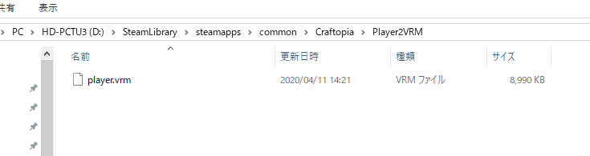

※諸注意
- 本MODはクラフトピア専用のMODです。
- 本MODは現時点(2020/09/21)では「シングル専用」となっています。マルチで使用しないでください！不具合が起こる可能性があります。
- バグで起動できない可能性があります。@yoship1639までご連絡ください。
- マテリアル(シェーダ)の互換性の問題でモデルの見た目が崩壊する可能性があります。
- 公式のバージョンアップで本MODが動作しなくなる可能性があります。作者までご一報ください。
- 本MODを利用する前に、必ずセーブデータのバックアップを取ってください。不具合からセーブデータが壊れてしまう可能性があります！
- もう一度言います、必ずセーブデータのバックアップを取ってください。「3. 始める前の準備」にバックアップの取り方を記載しています。
- 本MODを利用した事によるいかなる損害も作者は一切の責任を負いません。自己の責任の上でご利用下さい。
- 本MODに関する如何なる問い合わせをクラフトピアの運営元にしないで下さい。
- 3Dモデル界隈は権利や版権に関する問題が起きやすいので、使用するモデルに関しては十分ご注意ください。
- 権利や版権に関する問題が多発する場合、本MODのアップデート及び配布を停止する可能性がございますのでご協力お願いたします。
- 問題点や改善点がある方は@yoship1639もしくはhttps://github.com/yoship1639/Player2VRM/issuesまでお願いします。
- 以上を理解したうえで、良識の範囲内で楽しいクラフトピアライフを送りましょう！
1. 「BepInEx」の導入
① BepInExの配布ページ(https://github.com/BepInEx/BepInEx/releases)から「BepInEx_64_5.3.0.0.zip」をダウンロードしてください。

②「BepInEx_64_5.3.0.0.zip」を解凍し、中身をすべて「Craftopia」フォルダ内に入れてください。

※Craftopiaフォルダは以下の手順で確認できます。
- SteamのCraftopiaの [プロパティ] - [ローカルファイルタブ] - [ローカルファイルの閲覧]
「Craftopia」フォルダ内が以下の様になっていれば大丈夫のはずです。
- BepInEx (フォルダ)
- Craftopia_Data (フォルダ)
- MonoBleedingEdge (フォルダ)
- .gitkeep
- changelog.txt
- doorstop_config.ini
- UnityCrashHandler64.exe
- UnityPlayer.dll
- winhttp.dll
③ Craftopiaを起動します。タイトル画面に来たらそのまま終了させてください。自動的に必要なファイルが生成されます。
④ 「Craftopia/BepInEx」フォルダ内に以下のファイル群が出来ていることを確認してください。

以上でBepInExの導入は完了です。
2. 「Player2VRM」の導入
① Player2VRMの配布ページ(https://github.com/yoship1639/Player2VRM/releases)から「Player2VRM_x.x.x.zip」をダウンロードしてください。（x.x.xは最新のバージョンをダウンロードしてください）

② 「Player2VRM_x.x.x.zip」を解凍すると「Craftopia_Managedに入れるdll」フォルダと「Player2VRM.dll」「Player2VRM.shaders」「settings.txt」が入っています。それぞれ以下の場所に配置してください。
- 「Craftopia_Managedに入れるdll」フォルダの中身全部を「Craftopia/Craftopia_Data/Managed」フォルダ内にいれる
- 「Player2VRM.dll」と「Player2VRM.shaders」を「Craftopia/BepInEx/plugins」フォルダ内にいれる
- 「settings.txt」を[3. 始める前の準備]で説明する「Player2VRM」フォルダ内にいれる


以上でPlayer2VRMの導入は完了です。
3. 始める前の準備
① セーブデータのバックアップを取って下さい。本MODでセーブデータが壊れる可能性は否定できません。以下のフォルダ内にセーブデータが入っています。丸ごとコピーしてどこかに避難しておいてください。
- 「ユーザーフォルダ/AppData/LocalLow/PocketPair/Craftopia/Save」
※セーブデータが壊れた場合は、バックアップを丸ごと元の場所に戻し、直ちに本MODの使用を停止してください。

② 「Craftopia」フォルダ内に「Player2VRM」フォルダを作成してください。
③ 「Player2VRM」フォルダ内にプレイヤーモデルと差し替えたいVRMファイルを「player.vrm」という名前で入れてください。
④ 「Player2VRM」フォルダ内にいれた「settings.txt」で各種調整が出来ます。

以上で準備完了です。クラフトピアを起動しプレイヤーモデルがVRMモデルに差し変わっていることを確認出来たら成功です。お疲れ様でした。
差し変わっていなかった場合。今回の手順をもう一度見直してやり直してください。
4. バージョンアップ方法 (すでに古いバージョンを導入している方向け)
① Player2VRMの配布ページ(https://github.com/yoship1639/Player2VRM/releases)から「Player2VRM_x.x.x.zip」をダウンロードしてください。（x.x.xは最新のバージョンをダウンロードしてください）
②「Craftopia/BepInEx/plugins」内の「Player2VRM.dll」を新しいやつに置き換えてください。
以上でバージョンアップは完了です。
※ Player2VRM MODをアンインストールする場合
① 「Craftopia」フォルダにある「Player2VRM」フォルダを削除してください。
② 「Craftopia/BepInEx/plugins」フォルダにある「Player2VRM.dll」「Player2VRM.shaders」を削除してください。
③ 「Craftopia/Craftopia_Data/Managed」フォルダにある以下のファイルを削除してください。
- DepthFirstScheduler.dll
- MeshUtility.dll
- MToon.dll
- ShaderProperty.Runtime.dll
- UniHumanoid.dll
- UniJSON.dll
- UniUnlit.dll
- VRM.dll
以上で本MODのアンインストールは完了です。
更新履歴
- アニメーション手法を差し替え (アニメーションバグをほぼ完全に解消)
- 設定項目に盾（サブ武器）の表示非表示切り替え項目を追加
- 設定項目にクラフトピア内のシェーダを使うかの設定を追加
- VRM用のシェーダ(Standard, UniGLTF, VRM/MToon等)をそのまま使える様に改善
- 元の髪の毛が残るバグを修正
- モデルが光るのを修正takeN
- 影の影響を受ける設定項目を追加
- テクスチャでないメインカラーが落ちるのを修正
- モデルが光ったりテカテカしたりするマテリアルのバグを修正
- player.vrmのファイル名を設定ファイルで指定できる様に
- 両面マテリアルを正しく表示する様に修正
- 帽子やアクセサリの表示非表示を設定できる様に
- 走った後にそのまま走り続けるモーションのままになるバグを修正
- プレイヤーモデルの元のアニメーションとVRMのアニメーションがずれるバグを修正
- 設定ファイルを追加
- モデルスケールを調整できる項目を設定ファイルに追加
- 透過がうまくいかなかったバグを修正
- 初版。